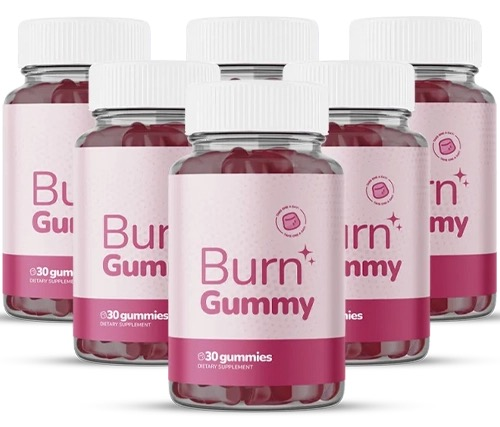

What Is Burn Gummy And How Does It Work?
Every afternoon around three o'clock, something flips a switch in the body — energy drops, focus turns fuzzy, and a candy bowl starts looking like a rescue mission. That drop-and-crave pattern has a name: the blood-sugar seesaw, and it's the real reason most "just eat less" advice falls apart by 4 p.m.
Burn Gummy is a daily berry-flavored gummy built around what its makers call the three-molecule stack — three ingredients, each already studied on its own for blood-sugar balance and fat metabolism, combined at the exact doses research has used rather than buried inside a mystery blend. One gummy, taken in the morning, no capsules to choke down and no three-times-a-day schedule to remember.
Think of blood sugar as a kid on a swing. Every time it swings too high after a sugary snack, it has to swing back down just as hard — and that crash is what shows up as brain fog, low energy, and a hand digging through the pantry an hour later. The three-molecule stack works like a steady hand holding that swing closer to center, so it doesn't fly as high or drop as hard.
It isn't marketed as an overnight fix. Burn Gummy is built for people who want their afternoon back — steadier energy, fewer cravings, a waistline that stops fighting them — through daily consistency rather than a crash diet or a jittery stimulant.
Burn Gummy Ingredients
No proprietary blend, no fourteen-ingredient label designed to look impressive while hiding the actual doses. Burn Gummy lists exactly three molecules and exactly how much of each is in every gummy — which is precisely what keeps the three-molecule stack doing its job instead of getting diluted.
- Chromium Picolinate (25 mcg per gummy, 71% Daily Value): an essential trace mineral the body relies on to help insulin do its work — supporting steadier blood sugar, better carb metabolism, and fewer sweet cravings during the exact window the seesaw usually tips.
- Berberine HCl (40 mg per gummy): often called nature's metabolic molecule, studied for its role in supporting healthy blood-sugar levels, a healthier lipid profile, and fat-metabolism pathways already within normal range.
- Cinnamon Bark Extract (28 mg per gummy): in use for over 2,000 years and now studied for supporting a healthier glucose response and metabolic comfort in the hours after a meal — the exact stretch where a crash tends to hit.
Each of these three plays a different position on the same field — one steadies insulin's response, one supports the metabolic pathways that turn stored fat into fuel, one smooths the glucose spike itself. Stacked together at research-backed doses in a single daily gummy, they're built to work as a system rather than three separate bets.
Burn Gummy Side Effects
Burn Gummy is built for adults dealing with stubborn fat, an unpredictable afternoon crash, or cravings that show up on schedule — not for anyone chasing a fifteen-pound loss in a week through starvation or stimulants.
The formula stays well tolerated because it's not forcing anything foreign through the system. Chromium, berberine, and cinnamon are nutrients and botanicals the body already recognizes, delivered at supportive doses rather than the kind of aggressive, pharmacological-strength dosing that tends to cause a rough ride. There's no added sugar, gluten, dairy, soy, or artificial dyes riding along in the gummy itself, and the formula is produced in a GMP-certified facility with third-party testing behind it.
Users report the gummy fitting into a normal day without disruption, and there's no widespread pattern of adverse reactions tied to using Burn Gummy as directed. As with any dietary supplement, anyone managing an existing medical condition or taking prescription medication should check with a healthcare professional before adding it to their routine.
Burn Gummy Dosage
The whole routine is one gummy, once a day, preferably in the morning, with or without food — no stacking multiple doses and no clock-watching between servings.
Each bottle holds a 30-day supply, and the makers are upfront that this isn't an overnight switch: most people notice a shift in energy and cravings somewhere in the first 7 to 14 days, with the more visible changes — steadier energy, looser clothes, fewer 3 p.m. detours to the vending machine — building over 60 to 90 days of consistent daily use alongside normal healthy habits. That's exactly why sticking with one gummy a day matters more than any other variable.
Because the seesaw effect tends to return once the stack stops, most repeat customers skip the single-bottle order and go straight for a 3- or 6-bottle supply — the 6-bottle option ships free and covers a full stretch of the 60-to-90-day window without a mid-course reorder. Stick to the one-a-day serving; more isn't faster, it's just more.
Burn Gummy – Refund Policy
Every order of Burn Gummy is backed by a 60-day money-back guarantee — a window that isn't random. It's roughly the same stretch the makers say it takes for the three-molecule stack to show its more visible results, so there's time to actually feel the difference before the guarantee window closes.
That kind of guarantee is a bet a company doesn't make on a formula it isn't confident in. Standing behind a full two-month window is the strongest signal in the entire page that this isn't a throwaway product built to be forgotten in a cabinet.
Full terms, eligibility details, and how to start a request are all laid out on the official Burn Gummy website — that's the right place to confirm the current policy before ordering.
Burn Gummy Customer Reviews
 Deborah Hensley
Tulsa, OK
Verified Purchase – 6 Bottles
Deborah Hensley
Tulsa, OK
Verified Purchase – 6 Bottles
"I used to hit a sugar crash like clockwork every single afternoon — jittery, foggy, digging through my desk drawer for anything sweet. I've been on Burn Gummy for about two months now and that wall just doesn't show up the same way anymore. My energy stays level from lunch straight through dinner, and I'm not white-knuckling my way past the vending machine at 3 o'clock like I used to."
 Renee Castillo
Scottsdale, AZ
Verified Purchase – 3 Bottles
Renee Castillo
Scottsdale, AZ
Verified Purchase – 3 Bottles
"Bloating and a waistline that felt permanently tight were my normal for years. Within about two weeks of taking Burn Gummy every morning, my jeans stopped fighting me by the end of the day. I'm not chasing some dramatic before-and-after — I just feel steadier, less puffy, and I've stopped stressing over every single meal like it's a test I'm about to fail."
 Patricia Owens
Richmond, VA
Verified Purchase – 6 Bottles
Patricia Owens
Richmond, VA
Verified Purchase – 6 Bottles
"I'm the person who reads every ingredient label and walks away annoyed at how many fat burners are just twenty things I can't pronounce hiding a dose that's basically nothing. Burn Gummy is chromium, berberine, and cinnamon — that's it, and the amounts are right there on the label. That alone got me to try it, and I actually feel the difference by mid-afternoon instead of wondering if I imagined it."
Burn Gummy – Where To Buy
Burn Gummy isn't sold on Amazon, eBay, or Walmart — and that's not an oversight, it's a warning worth taking seriously.
Third-party listings for supplements like this one carry a real risk: mislabeled batches, expired stock, or products that were never made in the same GMP-certified facility as the real thing. There's no way to verify what's actually inside a bottle bought from a marketplace seller, and there's no guarantee — literally, since the 60-day money-back guarantee only applies to orders placed through the official channel.
Buying direct is also the only way to access the current bottle bundles, including the free-shipping option on larger orders, and to make sure any support request goes to the people who actually stand behind the formula.
To ensure you're getting the authentic product, most users choose to visit the official website directly.
Is Burn Gummy A Scam?
Based on everything here — three named ingredients at disclosed research doses, a GMP-certified production standard, third-party testing, and a 60-day money-back guarantee that actually matches the timeline for results — Burn Gummy doesn't read like a scam. It reads like a formula that's confident enough to show its work.
The whole pitch comes back to the same idea from the first section: the blood-sugar seesaw is what drives the crash-and-crave cycle, and the three-molecule stack is built to hold that seesaw steadier, one gummy a day, without stimulants or a restrictive diet attached.
That said, it's not a fit for everyone, and it was never going to be. If a slower, steadier approach doesn't match what someone's looking for, that's a fair call to make — plenty of people manage weight and energy a different way, and no single gummy replaces sleep, food, and movement. But for anyone who's tired of the 3 p.m. crash and skeptical of another twenty-ingredient blend, the honest answer is simple: try it. If it does nothing, the 60-day guarantee means sending it back and being out nothing but a few minutes. As with any supplement, check with a healthcare professional first if there's an existing medical condition or medication involved.
For those who want to verify product details or check current availability, the official Burn Gummy website remains the safest and most reliable option.
